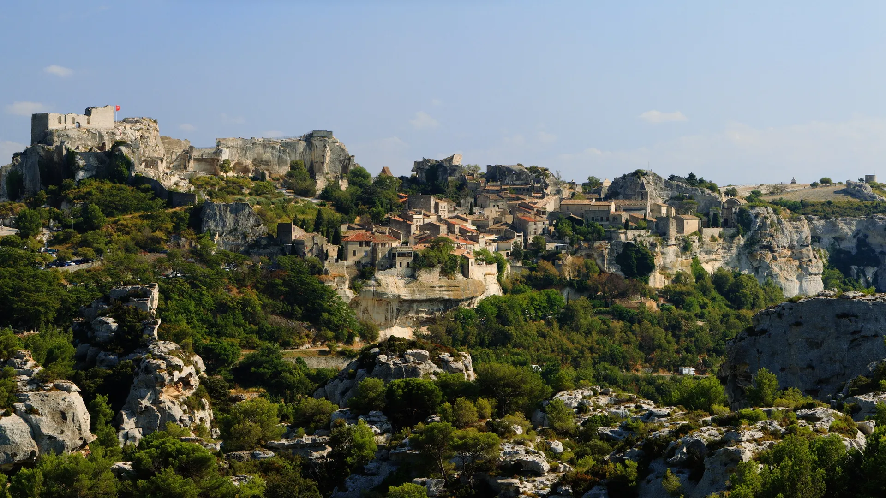
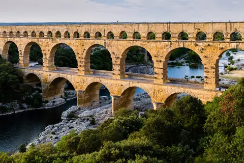

{kind=link}

Carrières des Lumières
높이 15m 거대한 지하 백색 석회암 채석장 동굴 전체를 디지털 캔버스로 변모시킨 세계 최초·최대 규모의 몰입형 미디어 아트 공간. 7,000㎡ 암벽과 바닥을 감싸는 빛과 음악의 향연.

알피유(Alpilles) 산맥의 깎아지른 석회암 암벽 꼭대기에 자리 잡아 '독수리 둥지(Nid d'aigle)'라 불리는 프랑스에서 가장 아름다운 마을(Les Plus Beaux Villages de France)의 대표 요새 마을이다.
중세 10~15세기 프로방스 최강의 무력을 자랑하며 스스로를 동방박사 발타자르의 후손이라 칭했던 '레보(Les Baux) 가문'의 독립 왕국 거점이었으며, 1632년 루이 13세의 재상 리슐리외 추기경이 반란을 진압하며 성채를 폭파하여 거대한 낭만적 폐허로 남았다.
1821년 지질학자 피에르 베르티에가 이 마을 인근에서 알루미늄 원광석을 처음 발견하여 마을 이름을 따 '보크사이트(Bauxite)'라는 광물명이 탄생한 역사적 장소이기도 하다.
"자연 암반을 그대로 파내어 방과 계단을 만든 거대한 중세 성채 유적 위에서, 알피유 산맥의 기암괴석과 은빛 올리브 평야를 360도로 굽어보는 압도적 전망 명소다." 마을 골목을 지나 레보 성채 정상 테라스에 올라 지중해 바다와 카마르그 습지 방면을 조망하는 75~90분 코스로 적합하다.
| 운영시간 | Château des Baux 9월 09:00–19:00 |
|---|---|
| 휴무 | 마을 자체는 연중 개방. 관광안내소는 12/25·1/1 휴무 (5~9월 월~금 09:00~18:00, 주말·공휴일 10:00~17:30) |
| 요금 | €10 (Carrières 통합권 €21) |
| 가는 법 | 주차 연중 08:00–19:00 유료 · 시간당 €5~ (최대 11시간) |
| 항목 | 상세 정보 |
|---|---|
| 위치 | 13520 Les Baux-de-Provence, Bouches-du-Rhône |
| 마을 입장 | 마을 자체 무료 개방 / 레보 성채(Château des Baux) 성인 €9.00~€11.00 |
| 보행 주의 | 암반 바닥이 닳아 미끄럽고 경사가 심하므로 미끄럼 방지 운동화 필수 |
| 주차장 | 마을 입구 도로변 유료 공영 주차장 (시간당 약 €4, 성수기 오전 10:30 이전 도착 권장) |
| 연계 동선 | Carrières des Lumières에서 도보 10분(차량 2분), Saint-Rémy-de-Provence에서 차로 15분 거리 |
높이 15m 거대한 지하 백색 석회암 채석장 동굴 전체를 디지털 캔버스로 변모시킨 세계 최초·최대 규모의 몰입형 미디어 아트 공간. 7,000㎡ 암벽과 바닥을 감싸는 빛과 음악의 향연.

기원전 6세기 켈트 성소에서 헬레니즘 도시를 거쳐 로마 제국의 온천 휴양도시로 번영했던 거대한 고대 발굴 유적지. 갈리아에서 가장 완벽하게 보존된 기원전 1세기 로마 영묘와 개선문 '레 장티크(Les Antiques)'.

세계적인 식물학자 파트리크 블랑의 300㎡ 거대한 수직 정원(Mur Végétal) 외벽 아래 40여 개 프로방스 전통 식재료 좌판이 모인 아비뇽의 활기찬 실내 중앙 미식 시장.

14세기 가톨릭 교황청이 로마를 떠나 68년간 머물렀던 서유럽 최대의 중세 고딕 요새 궁전. 베네딕토 12세의 구궁전과 클레멘스 6세의 신궁전, 마테오 조바네티의 프레스코화와 히스토패드 3D 증강현실 복원.

12세기 론(Rhône) 강을 건너 교황령 아비뇽과 프랑스 왕국을 잇던 920m의 유일한 석조 다리. 소빙하기의 거센 홍수로 22개 아치 중 4개와 2층 생니콜라 예배당만 남은 유네스코 세계유산.

우제스의 외르 샘에서 고대 로마 식민도시 님(Nîmes)까지 50km를 오직 중력만으로 흐르게 한 기원 1세기 3층 로마 수도교. 높이 48.8m 세계 최고(最高)의 고대 수력 토목공학 걸작(유네스코 세계유산).